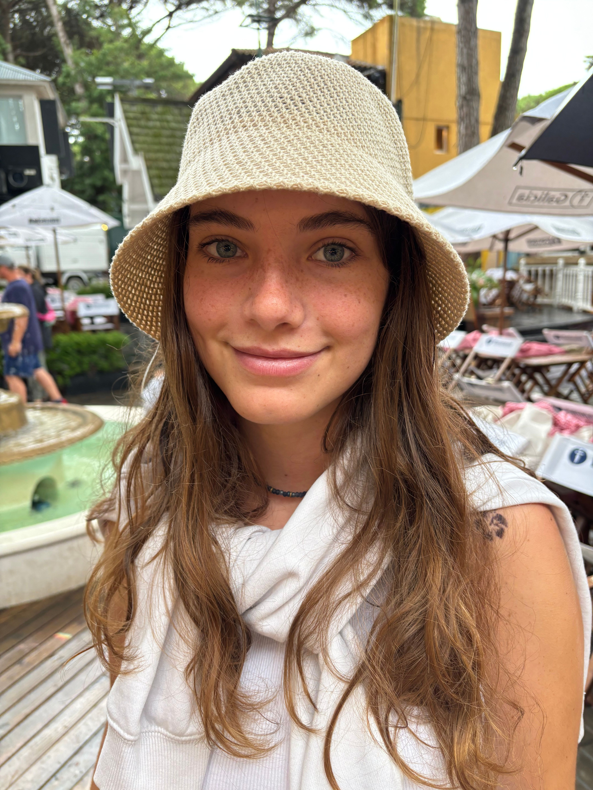

Artificial Intelligence Engineering Student
I am an Artificial Intelligence Engineering student with experience in Machine Learning, Computer Vision, Deep Learning, adversarial search, and data-driven systems.
Machine learning project focused on predicting bicycle demand using historical data. The model analyzes patterns such as weather conditions, time variables, and seasonal trends.
Deep learning project using convolutional neural networks to classify butterfly species from images. The model achieved high accuracy through image preprocessing and model tuning.
Computer vision project focused on reconstructing 3D scenes from stereo images. The system performs camera calibration, disparity estimation, and generates dense point clouds representing the reconstructed environment.
Email: giavarinifran@gmail.com
Phone: +54 9 2477 668943